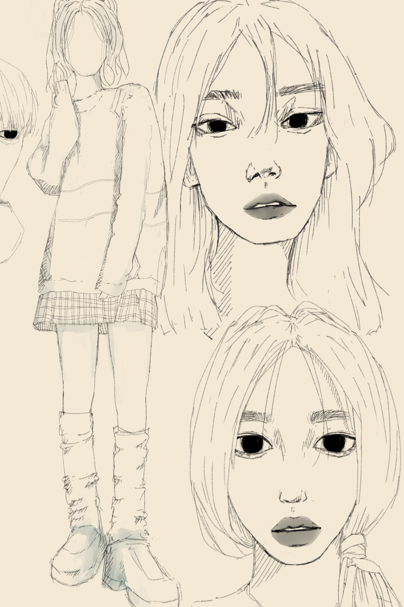

Hobby

Drawing
Saya sangat suka menggambar. Saya mulai menggambar dari umur empat tahun. Pada saat itu saya mengikuti les menggambar di sanggar seni.

Music
Saya sangat gemar bermain alat musik seperti gitar dan piano.Saya belajar alat musik tersebut dari Youtube.

Chess
Saya mulai bermain catur pada umur lima tahun. Ayah saya yang pertama kali mengajarkan saya bagaimana bermain catur yang benar.